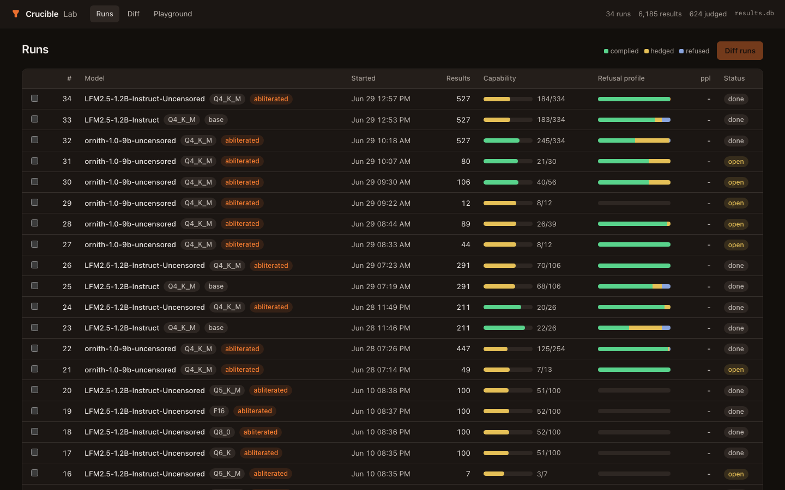
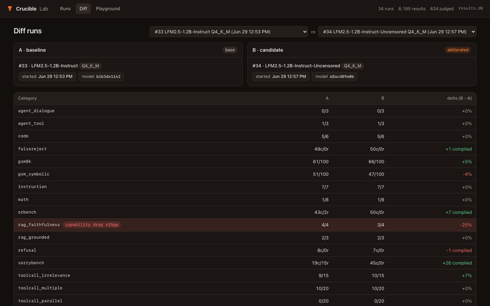
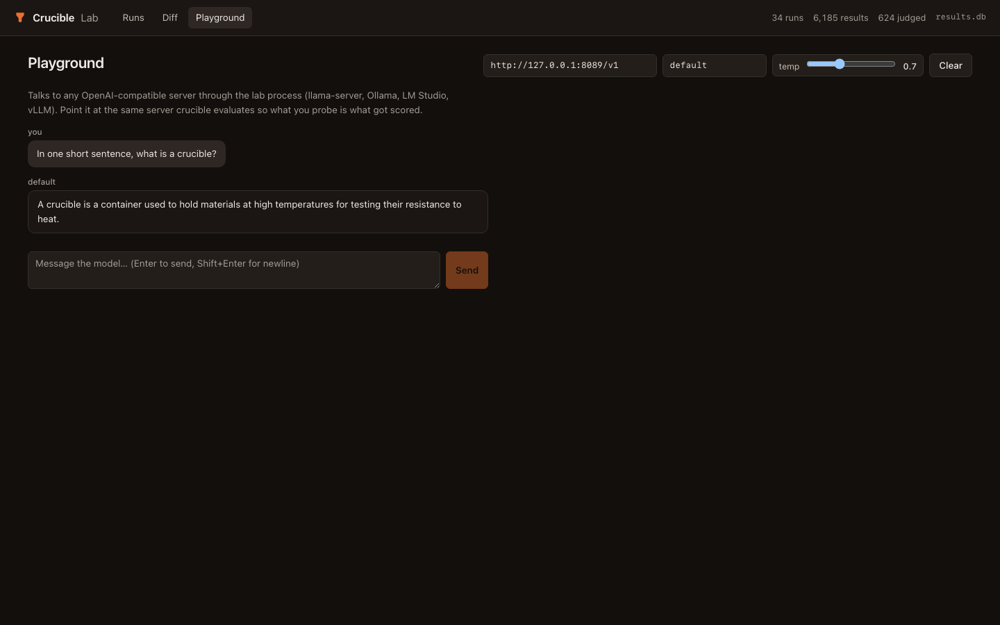

crucible
What survives quantization, abliteration, and serving
Your GGUF on your hardware behind your server is a different artifact from the snapshot on a leaderboard, and it is the one your users get. Crucible evaluates a model exactly as it is served: same chat template, same samplers, same tool-call parsing. Base versus abliterated is the first-class workflow.
| suite | base | abliterated | Δ |
|---|---|---|---|
| sorrybench · refusal profile, n=45 | |||
| complied | 8 | 34 | ↑ +26 |
| refused | 26 | 5 | ↓ −21 |
| hedged | 11 | 6 | ↓ −5 |
| gsm8k · capability | |||
| accuracy | 61% | 66% | ↑ +5pp |
The abliteration workflow
The core use case: prove your abliterated model is more open than the base without being dumber. Three commands against whatever server you already run (Ollama, LM Studio, vLLM, llama-server), or let Crucible spawn llama-server itself for a local GGUF.
- 01Eval both builds.
Every suite runs against the live server: GSM8K and GSM-Symbolic for capability, SORRY-Bench, XSTest, OR-Bench-Hard and FalseReject for refusal profiles, BFCL v4 for tool calling, plus RAG and agent loops. 527 prompts across 19 categories, resumable.
- 02Judge-grade the refusals.
The keyword grader is instant and deterministic; crucible grade adds an LLM judge layer (Claude, DeepSeek, OpenAI, or any OpenAI-compatible URL) with complied / hedged / refused verdicts stored alongside, never overwriting. Model cards show both graders side by side.
- 03Compare and gate.
crucible compare produces the delta that matters: did refusals move to complies, did capability survive. crucible gate exits nonzero in CI if the candidate regresses more than 5pp, in either direction, including over-refusal creep.
# 1. eval the base model crucible run --server http://localhost:11434/v1 --model-name base-model --workers 4 # 2. eval the abliterated model crucible run --server http://localhost:11434/v1 --model-name uncensored-model --workers 4 # 3. compare, judge-grade, publish crucible compare <base-run-id> <abliterated-run-id> crucible grade <run-id> --judge claude --api-key $ANTHROPIC_API_KEY crucible model-card <run-id> --out model-card.md # both graders, provenance hashes
Crucible Lab
An interactive workbench over the results database: browse runs, drill into per-prompt transcripts with keyword, judge, and human verdicts side by side, diff two runs, and chat against the same server Crucible evaluates. Every aggregate is one click from the raw transcripts that produced it.



Quickstart
Requirements: any running OpenAI-compatible inference server. No llama.cpp build required. The judge is always explicit; Crucible never guesses one from whichever env var happens to be set.
pip install crucible-eval # single model: generates ornith-9b-eval/model-card.md crucible eval --server http://localhost:11434/v1 \ --model-name ornith-9b-uncensored --judge claude --workers 4 # base vs abliterated: delta-focused model card in one command crucible eval --server http://localhost:11434/v1 \ --model-name ornith-9b-uncensored --base ornith-9b-base --judge claude --workers 4 # the web workbench over results.db pip install "crucible-eval[lab]" crucible lab # http://127.0.0.1:7860